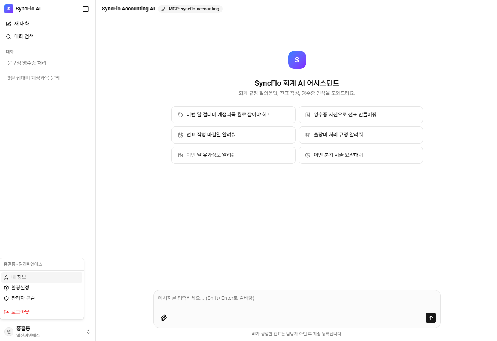
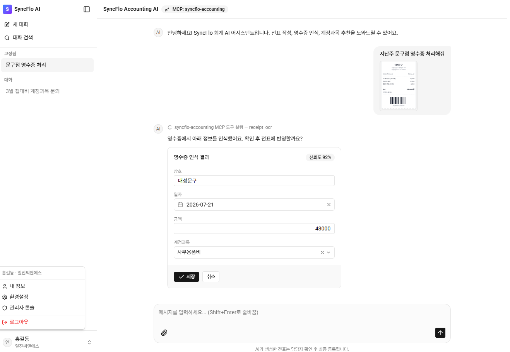
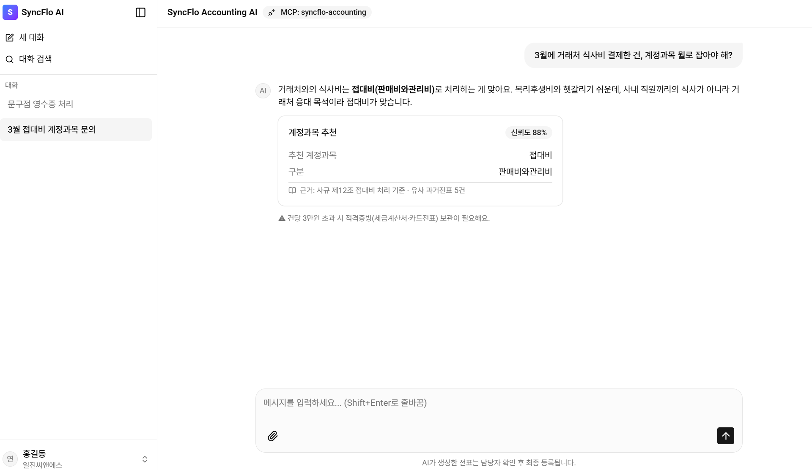
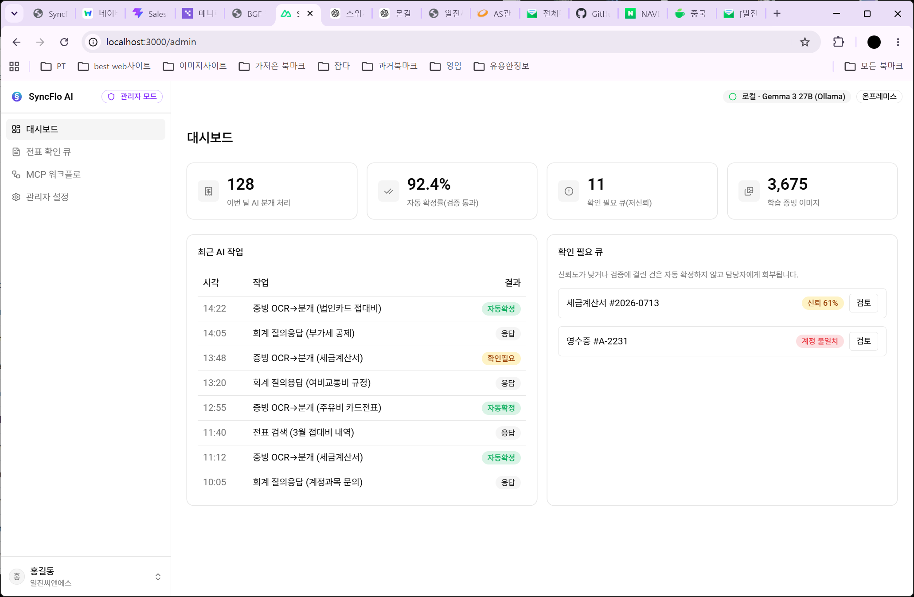
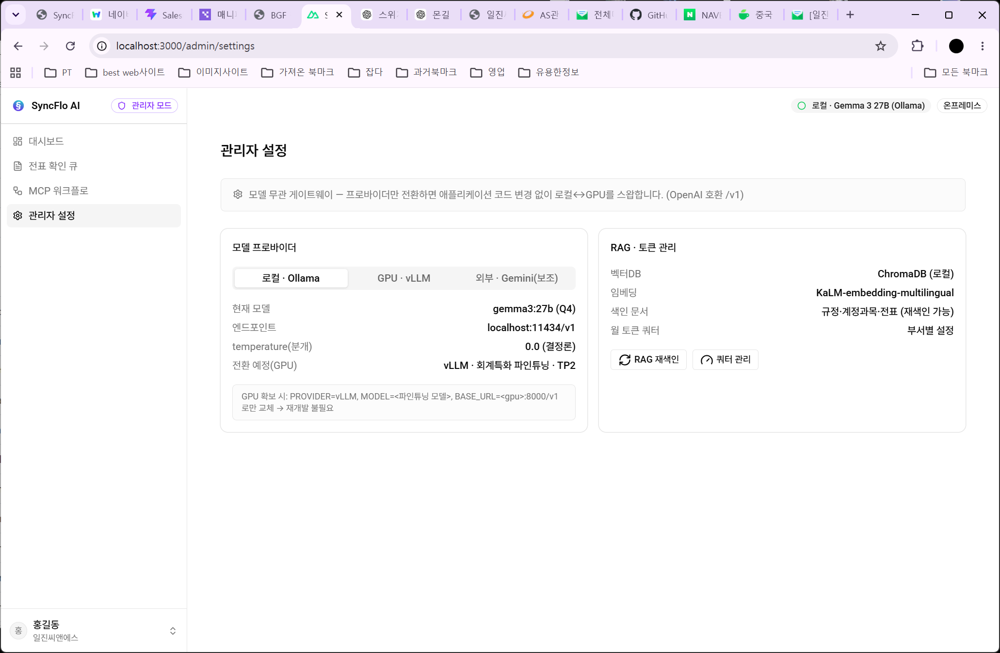

참고한 자료 함께 보기
답변과 함께 사내 규정이나 과거 전표를 보여주어 사용자가 직접 확인할 수 있습니다.
사내 AI 업무 어시스턴트
외부 AI 사용 비용과 정보 유출 부담은 줄이고,
회계·메일·일정 같은 사내 업무를 대화로 연결하는 AI 서비스입니다.

01 — 프로젝트 배경
외부 AI 서비스를 계속 사용하면 비용이 커지고, 회사 자료를 외부로 보내기 어렵다는 문제가 있습니다. 동시에 직원들은 규정을 찾고 전표를 작성한 뒤, 다시 메일이나 일정 화면으로 이동하며 같은 내용을 반복해서 입력해야 했습니다. 이 프로젝트는 회사 내부에서 사용할 수 있는 AI 환경을 만들고, 여러 사내 도구를 하나의 대화 안에서 이어 쓰는 방식을 화면으로 구현한 작업입니다.
회사 안에서 안전하게 운영하면서, 필요한 업무 도구를 계속 연결해 나갈 수 있는 사내 AI 화면을 만드는 것
02 — 화면 설계 원칙
익숙한 채팅 화면을 사용하되, AI가 어떤 자료를 참고했는지와 결과가 얼마나 확실한지 함께 보여줍니다. 전표 등록이나 메일 발송처럼 중요한 업무는 사용자가 내용을 확인한 뒤 최종 실행하도록 구성했습니다.
답변과 함께 사내 규정이나 과거 전표를 보여주어 사용자가 직접 확인할 수 있습니다.
영수증 인식이나 추천 결과가 불확실하면 자동 처리하지 않고 확인이 필요하다고 알려줍니다.
AI는 전표나 메일의 초안을 만들고, 실제 등록과 발송은 사용자가 결정합니다.
전표 처리 후 같은 내용으로 회의 일정을 만드는 등 업무를 다시 설명하는 과정을 줄입니다.
03 — 대표 시나리오
한 번의 명령으로 모든 것을 자동 실행하지 않습니다. 단계마다 시스템의 상태와 판단 근거를 보여주고, 중요한 행동 전에는 사용자의 확인을 요청합니다.
이미지를 대화창에 올립니다
상호·날짜·금액을 읽습니다
알맞은 회계 항목을 제안합니다
사용자가 수정하고 확정합니다
같은 내용으로 일정을 만듭니다

AI가 영수증에서 정보를 추출해도 곧바로 등록하지 않습니다. 사용자는 대화 안에서 값을 수정하고, 신뢰도를 확인한 뒤 저장합니다.

계정과목만 답하는 대신 어떤 사내 규정과 과거 전표를 참고했는지 표시해, 사용자가 결과를 검토할 수 있도록 구성했습니다.
04 — 확장 구조
SyncFlo AX는 하나의 기능만 사용하는 AI가 아니라, 회사에서 이미 쓰고 있는 여러 서비스를 계속 연결할 수 있도록 만든 구조입니다. 현재는 회계와 네이버웍스 업무를 중심으로 구성했고, 이후 ERP나 Jira처럼 연결 기능을 제공하는 서비스도 추가할 수 있습니다. 화면에서는 사용자가 어떤 도구를 이용하고 있는지와 실행 전 확인할 내용을 쉽게 알 수 있도록 정리했습니다.
05 — 관리자 경험
일반 직원은 대화 화면에서 업무를 처리하고, 관리자는 별도 화면에서 처리 현황과 확인이 필요한 결과를 살펴봅니다. 어떤 사내 도구가 연결되어 있는지, AI가 참고할 회사 자료가 준비되어 있는지도 같은 화면에서 관리할 수 있도록 구분했습니다.


AI가 확신하지 못한 결과를 담당자가 다시 확인합니다.
사용 중인 AI와 참고할 회사 자료의 준비 상태를 확인합니다.
회계·그룹웨어 등 현재 사용할 수 있는 도구를 관리합니다.
06 — 프로토타이핑
전달받은 요구사항을 바탕으로 일반 사용자와 관리자가 필요한 화면을 나누고, 각 기능의 배치와 사용 흐름을 설계했습니다. 디자인한 화면은 AI 개발 도구를 활용해 Nuxt·Vue 기반의 반응형 프로토타입으로 구현했으며, 생성된 코드를 직접 확인하고 수정하면서 실제 화면에서 동작을 검토했습니다.
익숙한 진입 경험은 유지하되, 연결 도구와 업무 범위를 명확히 안내합니다.
07 — 현재 상태
현재는 실제 업무 자료 대신 예시 데이터로 화면과 사용 흐름을 확인하는 단계입니다. 회사 내부에서 AI를 운영하는 환경과 각 업무 도구의 연결 작업은 개발팀에서 별도로 진행하고 있으며, 연결 범위와 화면은 검토 결과에 따라 달라질 수 있습니다.
전표 처리와 일정 연결 화면 검토
연결할 사내 도구와 사용자별 화면 확대